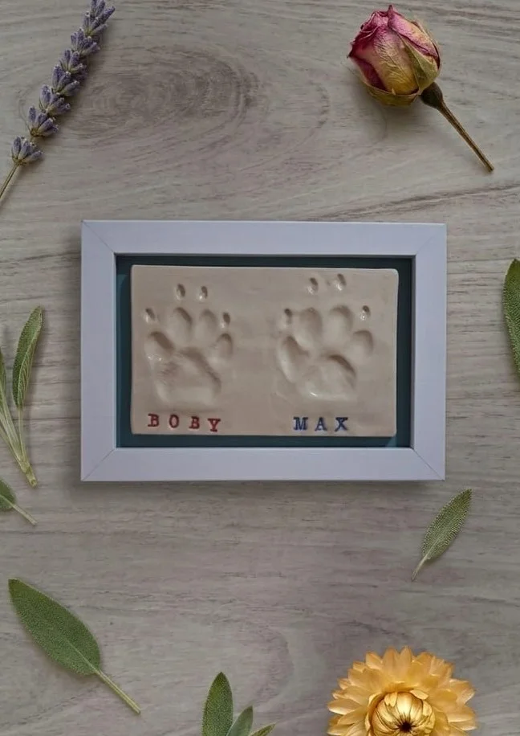
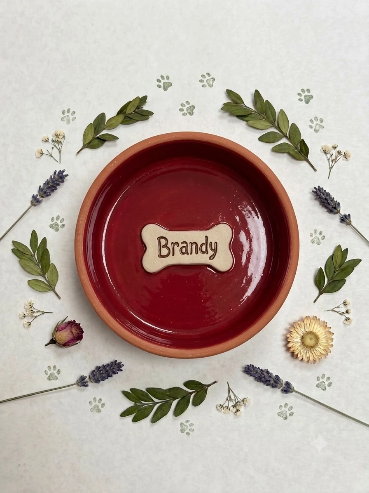
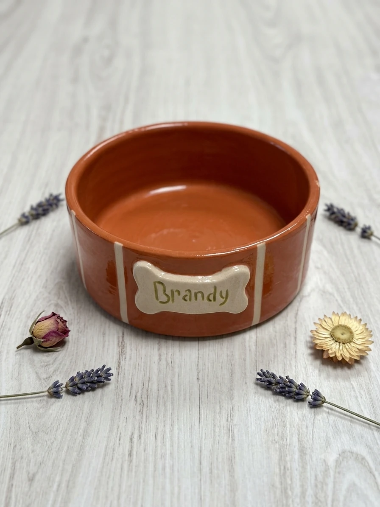
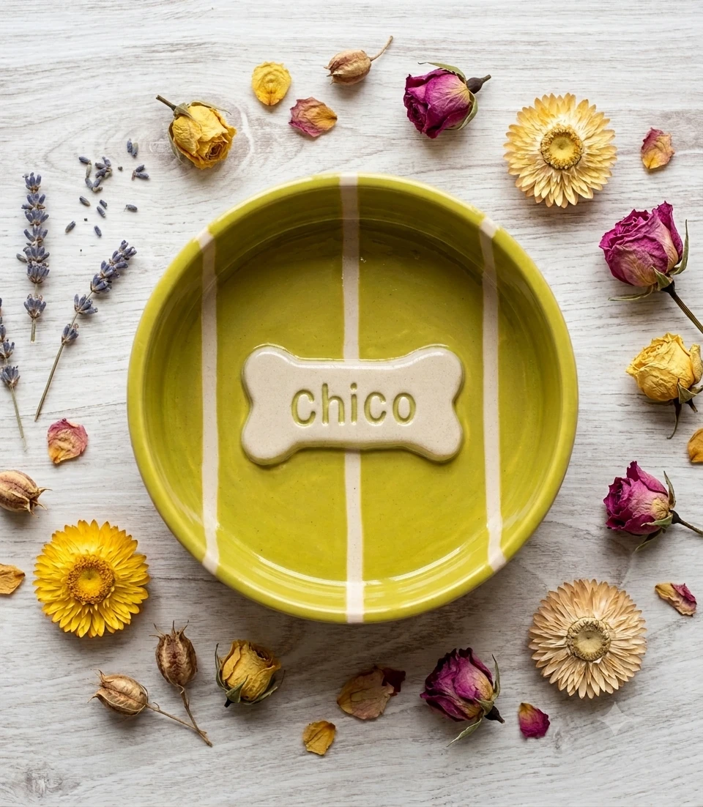
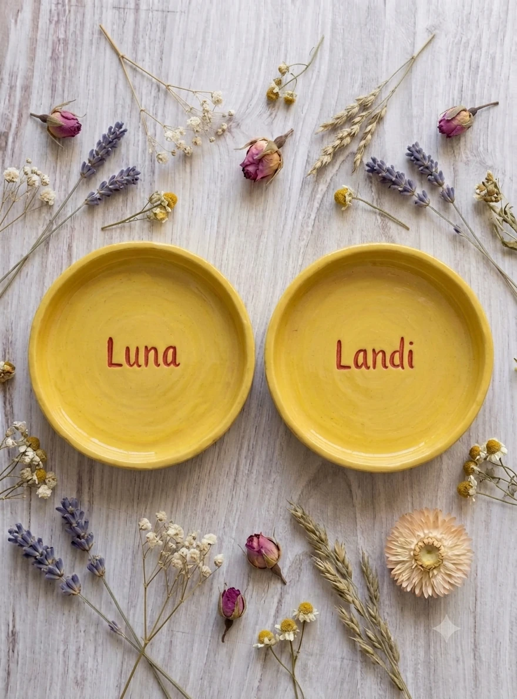
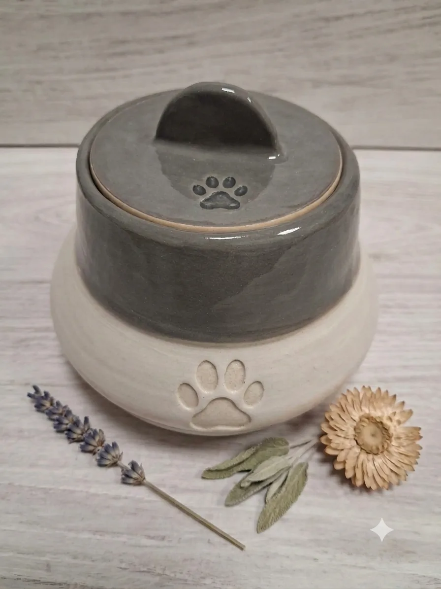

Regalos de cerámica para mascotas en Valladolid
Piezas de cerámica artesanal hechas a mano en nuestro taller de Valladolid, pensadas para tu mascota y para guardar su recuerdo para siempre: huellas personalizadas desde 35€, comederos, bebederos y detalles para el jardín. Cada pieza se personaliza con el nombre de tu perro o gato.
Nuestras piezas para mascotas



Huellas de Mascota
Azulejo de cerámica artesanal con la huella de tu mascota, hecho a mano en nuestro taller de Valladolid. Un recuerdo personalizado y eterno de tu compañero peludo, perfecto para regalar o para conservar en casa.
Desde 35€



Comederos y Bebederos
Comederos y bebederos de cerámica artesanal para perros y gatos, hechos a mano en nuestro taller de Valladolid. Piezas resistentes en gres esmaltado de alta calidad, higiénicas, fáciles de limpiar y personalizables con el nombre de tu mascota.
Precio a consultar
Casita de Pájaros
Casita de pájaros de cerámica artesanal hecha a mano en nuestro taller de Valladolid. Una pieza decorativa para jardín o terraza, pensada para dar cobijo a los pájaros y aportar un toque artesanal a tu espacio exterior.
Precio a consultar
Porta Chuches
Bote de cerámica artesanal para guardar los premios y chuches de tu mascota, hecho a mano en nuestro taller de Valladolid.
Precio a consultar